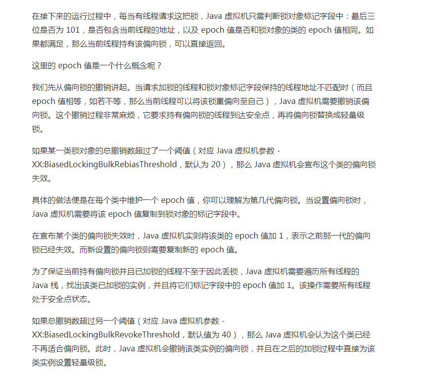
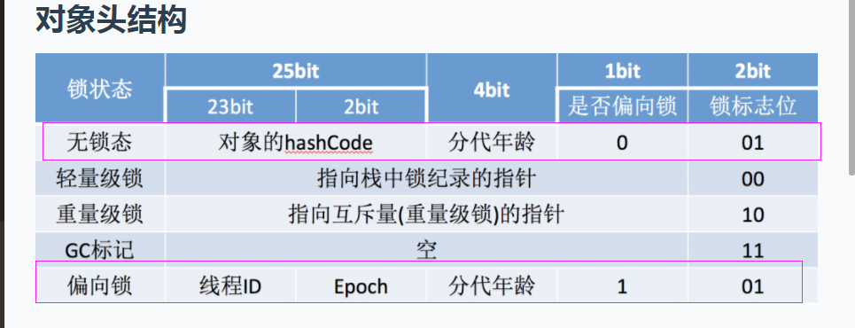

预备知识
Java内置的各种锁比较
| 锁 | 优点 | 缺点 | 场景 |
|---|---|---|---|
| 偏向锁 | 加锁和解锁（非竞争下）基本不需要额外的消耗 | 如果存在锁竞争，会带来额外的锁撤销的消耗。 | 适用于只有一个线程访问同步块的场景 |
| 轻量级锁 | 竞争的线程不会阻塞，而是通过适应性自旋（Adaptive Spinning）来空跑 | 消耗CPU | 借助于CAS操作实现锁，避免了依赖操作系统底层的mutex lock（重量级锁）造成的性能损耗 |
| 重量级锁 | 不必使用自旋，浪费cpu | 调用底层系统资源，由用户态切换至内核态，线程的挂起和唤醒会消耗大量的资源 | 同步快代码的执行一般耗时比较长 |
偏向锁的撤销
锁状态的流转图

Java 虚拟机需要撤销该偏向锁。这个撤销过程非常麻烦，它要求持有偏向锁的线程到达安全点(这里会导致STW)，再将偏向锁替换成轻量级锁。

偏向锁的优化
- 在并发较低的场景，大部分只有一个线程的场景，偏向锁能带好较大的性能提升。
- 在高争用的场景，偏向锁的撤销可能会导致频繁的STW，影响服务的性能。建议在高并发的场景通过
-XX:-UseBiasedLocking禁用偏向锁。
偏向锁与hashcode的冷知识
调用 Object.hashCode() 会关闭该对象的偏向锁。
验证
|
|
你可以采用参数
-XX:+PrintBiasedLockingStatistics来打印各类锁的个数。由于 C2 使用的是另外一个参数-XX:+PrintPreciseBiasedLockingStatistics，因此你可以限制 Java 虚拟机仅使用 C1 来即时编译（对应参数-XX:TieredStopAtLevel=1）。
注意：Hotspot虚拟机在开机启动后有个延迟（4s），经过延迟后才会对每个创建的对象开启偏向锁。我们可以通过设置下面的参数来修改这个延迟，或者直接sleep一段时间-XX:BiasedLockingStartupDelay=0
- 1.通过参数 -XX:+UseBiasedLocking，比较开关偏向锁时的输出结果。
- 2.在 main 方法的循环前添加 lock.hashCode 调用，并查看输出结果。
- 3.在 Lock 类中复写 hashCode 方法，并查看输出结果。
- 4.在 main 方法的循环前添加 System.identityHashCode 调用，并查看输出结果。
结论：调用 Object.hashCode() 会关闭该对象的偏向锁！
仔细看Java对象头的结构就可以看出一些端倪，对象的hashCode存于对象头，存储了hashCode就没办法存储偏向锁信息了（这么存储应该也是省对象的内存空间）。JVM应该是在这里的实现做了一些取舍。 
这是一个针对HotSpot VM的锁实现的问题。 简单答案是：
- 当一个对象已经计算过identity hash code，它就无法进入偏向锁状态；
- 当一个对象当前正处于偏向锁状态，并且需要计算其identity hash code的话，则它的偏向锁会被撤销，并且锁会膨胀为重量锁；
- 重量锁的实现中，ObjectMonitor类里有字段可以记录非加锁状态下的mark word，其中可以存储identity hash code的值。或者简单说就是重量锁可以存下identity hash code。
请一定要注意，这里讨论的hash code都只针对identity hash code。用户自定义的hashCode()方法所返回的值跟这里讨论的不是一回事。Identity hash code是未被覆写的 java.lang.Object.hashCode() 或者 java.lang.System.identityHashCode(Object) 所返回的值。作者：RednaxelaFX 链接：https://www.zhihu.com/question/52116998/answer/133400077 来源：知乎 著作权归作者所有。商业转载请联系作者获得授权，非商业转载请注明出处。
参考文档
https://wiki.openjdk.java.net/display/HotSpot/Synchronization